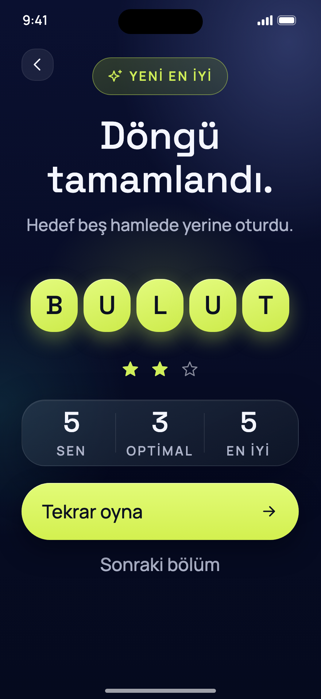
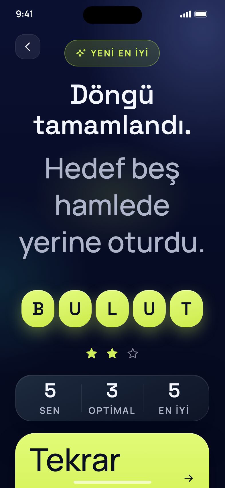
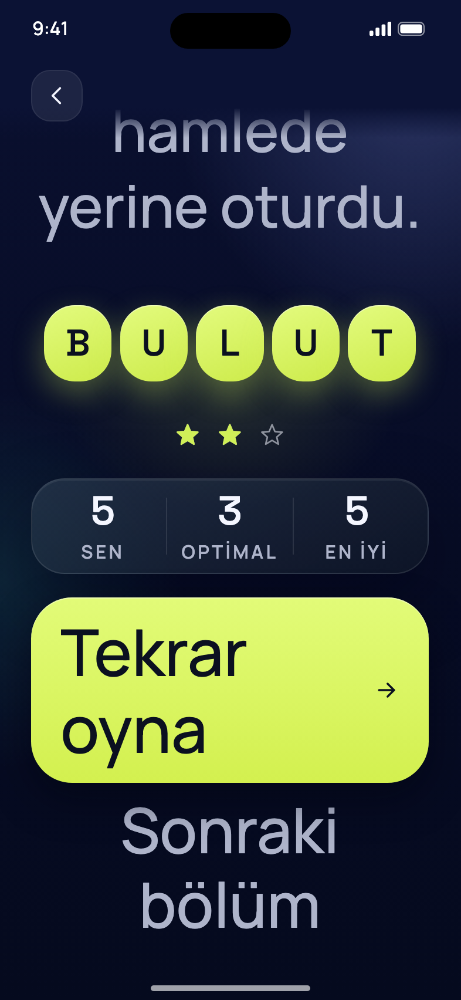
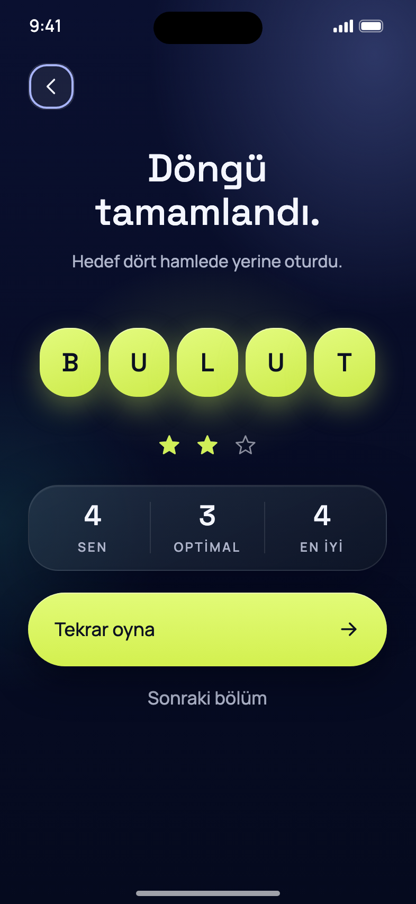
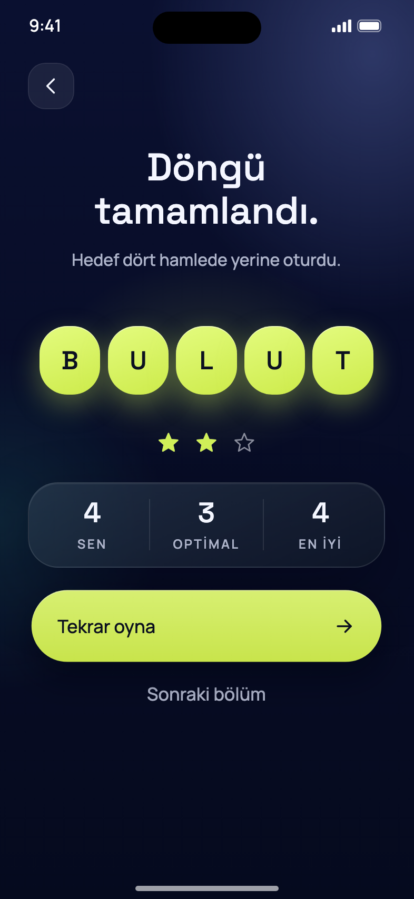
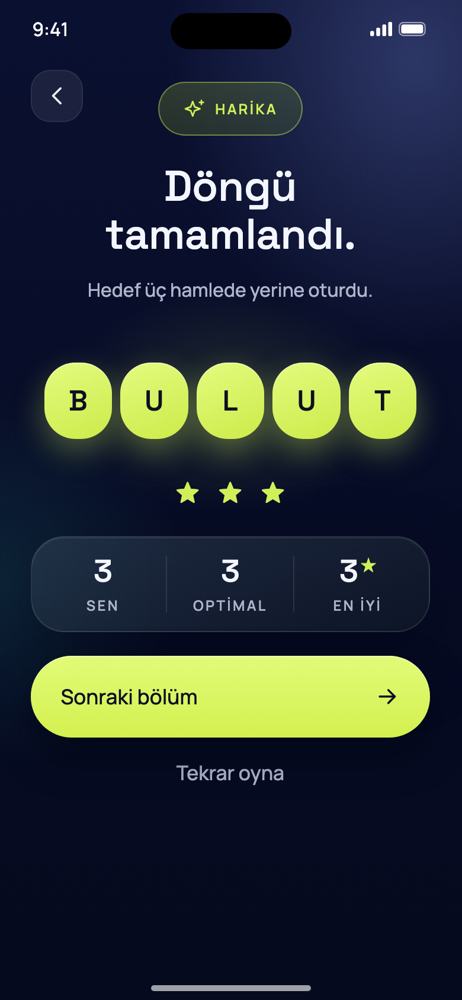
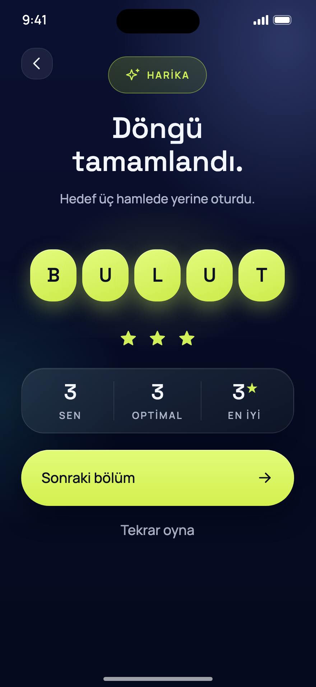

<!doctype html><meta charset="utf-8"><style>body{margin:0;background:#15161c;font:600 13px Manrope,sans-serif;color:#cfd3e6;display:grid;grid-template-columns:repeat(5,240px);gap:16px;padding:16px}img{width:240px;border-radius:14px;display:block}figure{margin:0}figcaption{padding:6px 2px}</style><figure><figcaption>1.3× cap · 16</figcaption></figure><figure><figcaption>1.3× cap · 16e</figcaption></figure><figure><figcaption>1.3× cap · Pro Max</figcaption></figure><figure><figcaption>AX5 · kaydırma 0</figcaption></figure><figure><figcaption>AX5 · sonuna kaydırılmış</figcaption></figure><figure><figcaption>AX5 · 16e</figcaption></figure><figure><figcaption>odak · geri</figcaption></figure><figure><figcaption>CTA basılı</figcaption></figure><figure><figcaption>16e · Perfect</figcaption></figure><figure><figcaption>Pro Max · Perfect + yeni</figcaption></figure>